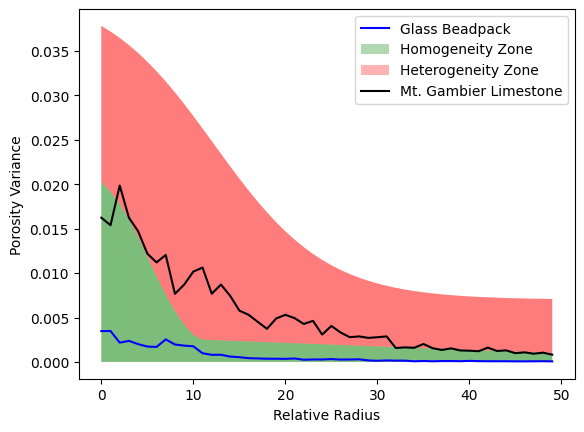

Heterogeneity Classifier#
This tutorial demonstrates how we can use scale-independent porosity variance to classify a given sample as homogeneous or heterogeneous.
Import packages#
from dpm_tools.io import read_image
from dpm_tools.metrics import heterogeneity_curve
from dpm_tools.visualization import plot_heterogeneity_curve
from pathlib import Path
import numpy as np
import matplotlib.pyplot as plt
from matplotlib.gridspec import GridSpec
[15:14:43] ERROR PARDISO solver not installed, run `pip install pypardiso`. Otherwise, _workspace.py:56 simulations will be slow. Apple M chips not supported.
Load and visualize data#
datapath = Path('../_static/data')
beadpack = read_image(datapath / 'beadpack.tif')
gambier = read_image(datapath / 'mtgambier.tif')
fig = plt.figure(figsize=(12, 5))
gs = GridSpec(1, 3, width_ratios=[1, 1, 0.05], wspace=0.3)
# Create subplots
ax1 = fig.add_subplot(gs[0, 0])
ax2 = fig.add_subplot(gs[0, 1])
cax = fig.add_subplot(gs[0, 2])
im1 = ax1.imshow(beadpack[0,:,:], cmap='gray')
im2 = ax2.imshow(gambier[0,:,:], cmap='gray')
fig.colorbar(im1, cax=cax)
ax1.set_title('Glass Bead Pack',fontsize=14)
ax2.set_title('Mt. Gambier Limestone',fontsize=14)
plt.show()
---------------------------------------------------------------------------
FileNotFoundError Traceback (most recent call last)
/tmp/ipykernel_1825/1279017643.py in ?()
1 datapath = Path('../_static/data')
----> 2 beadpack = read_image(datapath / 'beadpack.tif')
3 gambier = read_image(datapath / 'mtgambier.tif')
4
5 fig = plt.figure(figsize=(12, 5))
~/work/dpm_tools/dpm_tools/dpm_tools/io/_read_data.py in ?(read_path, **kwargs)
209 '.mat': _read_mat}
210
211 filetype = read_path.suffix
212
--> 213 return filetypes.get(filetype.lower(), _not_implemented)(read_path, **kwargs)
~/work/dpm_tools/dpm_tools/dpm_tools/io/_read_data.py in ?(filepath, full_path, **kwargs)
33 filepath = filepath / kwargs['filename']
34 except FileNotFoundError:
35 print('Please provide a filename')
36
---> 37 return tiffread(filepath)
/opt/hostedtoolcache/Python/3.10.15/x64/lib/python3.10/site-packages/tifffile/tifffile.py in ?(***failed resolving arguments***)
1249
1250 if isinstance(files, str) or not isinstance(
1251 files, collections.abc.Sequence
1252 ):
-> 1253 with TiffFile(
1254 files,
1255 mode=mode,
1256 name=name,
/opt/hostedtoolcache/Python/3.10.15/x64/lib/python3.10/site-packages/tifffile/tifffile.py in ?(self, file, mode, name, offset, size, omexml, _multifile, _useframes, _parent, **is_flags)
4314 raise ValueError('invalid OME-XML')
4315 self._omexml = omexml
4316 self.is_ome = True
4317
-> 4318 fh = FileHandle(file, mode=mode, name=name, offset=offset, size=size)
4319 self._fh = fh
4320 self._multifile = True if _multifile is None else bool(_multifile)
4321 self._files = {fh.name: self}
/opt/hostedtoolcache/Python/3.10.15/x64/lib/python3.10/site-packages/tifffile/tifffile.py in ?(self, file, mode, name, offset, size)
14723 self._offset = -1 if offset is None else offset
14724 self._size = -1 if size is None else size
14725 self._close = True
14726 self._lock = NullContext()
> 14727 self.open()
14728 assert self._fh is not None
/opt/hostedtoolcache/Python/3.10.15/x64/lib/python3.10/site-packages/tifffile/tifffile.py in ?(self)
14742 if self._mode not in {'rb', 'r+b', 'wb', 'xb'}:
14743 raise ValueError(f'invalid mode {self._mode}')
14744 self._file = os.path.realpath(self._file)
14745 self._dir, self._name = os.path.split(self._file)
> 14746 self._fh = open(self._file, self._mode, encoding=None)
14747 self._close = True
14748 self._offset = max(0, self._offset)
14749 elif isinstance(self._file, FileHandle):
FileNotFoundError: [Errno 2] No such file or directory: '/home/runner/work/dpm_tools/dpm_tools/docs/_static/data/beadpack.tif'
Scale-independent Variance#
results = {'beadpack': {}, 'gambier': {}}
results['beadpack']['radii'], results['beadpack']['variance'] = heterogeneity_curve(beadpack)
results['gambier']['radii'], results['gambier']['variance'] = heterogeneity_curve(gambier)
Plot the Results#
fig, ax = plot_heterogeneity_curve(results['beadpack']['radii'], results['beadpack']['variance'], color='blue', label='Glass Beadpack')
fig, ax = plot_heterogeneity_curve(results['gambier']['radii'], results['gambier']['variance'], fig=fig, ax=ax, color='black', label='Mt. Gambier Limestone')
plt.legend()
plt.show()

Scoring the Result#
def sigmoid(x):
"""
Sigmoid function
"""
return 1 / (1 + np.exp(-x))
def heterogeneity_score(variances) -> float:
"""
Assign a heterogeneity score to the heterogeneity curve based on the number of points above the homogeneous/heterogeneous threshold.
Parameters:
variances (np.ndarray): The porosity variance values from the heterogeneity curve
Returns:
float: The heterogeneity score for the given heterogeneity curve. 0 = homogeneous, 1 = heterogeneous
"""
x = np.linspace(-2, 17, len(variances))
bound = (0.023 * (1 - sigmoid(x)))
bnd = bound[bound <= 0.0025]
bound[bound <= 0.0025] = np.linspace(0.0025, 0.001, len(bnd))
x2=np.linspace(-2, 6, len(variances))
vv=((0.035 * (1 - sigmoid(x2)))) + 0.007
wts = vv / vv.sum()
r = wts * (variances > bound)
return r.sum()
beadpack_score = heterogeneity_score(results['beadpack']['variance'])
gambier_score = heterogeneity_score(results['gambier']['variance'])
print(f"Heterogeneity Score for Glass Bead Pack: {beadpack_score :.3f}")
print(f"Heterogeneity Score for Mt. Gambier Limestone: {gambier_score:.3f}")
Heterogeneity Score for Glass Bead Pack: 0.000
Heterogeneity Score for Mt. Gambier Limestone: 0.809